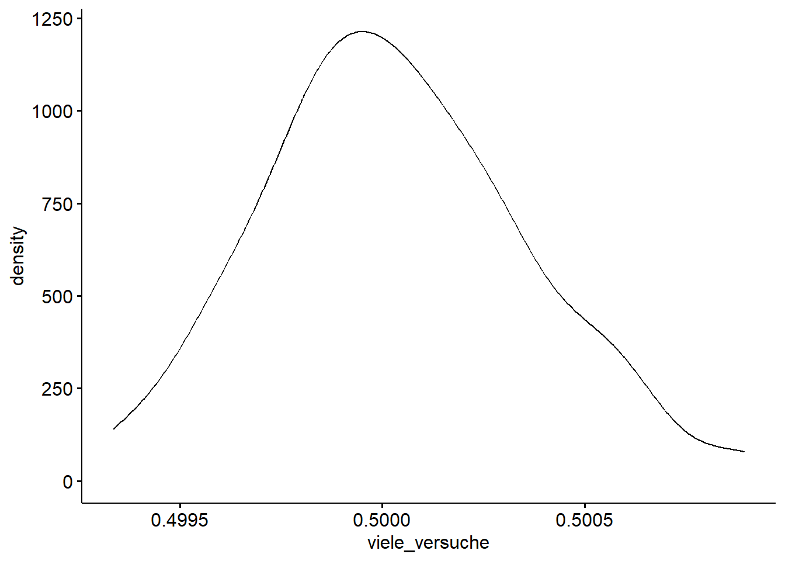

n_control_group <- 954630 # runde Ecken
n_exp_group <- 1082180 # quadratische Ecken
n_total <- n_control_group + n_exp_groupwikipedia
simulation
probability
story
nullhypothesis
1 Aufgabe
In Ihrem Buch “Active Statistics” beschreiben die Autoren eine Studie der Wikipedia-Organisation (Gelman & Vehtari, 2024), vgl. S. 33f.
In der Studie - ein kontrolliertes Experiment, auch “A/B-Test” genannt - wurde der Effekt von abgerundeten vs. quadratischen Ecken von Textboxen auf die Spendenbereitschaft untersucht (s. Abb. 2, S. 34). (Das Buch ist kostenfrei auf der Webseite zum Buch erhältlich.)
Runde Ecken:
Quadratische Ecken:
Das Wikipedia-Team gab folgende Stichprobengrößen an:
Damit liegt der Anteil der Experimentalgruppe am Gesamtstichprobenumfang bei 53%:
n_exp_group / n_total[1] 0.5313112Wie hoch ist die Wahrscheinlichkeit, einen so großen, d.h. 53% vs. 47%, (oder noch größeren) Unterschied in den Umfängen der beiden Stichproben zu erhalten, unter der Annahme einer zufälligen Aufteilung?
Hinweise:
- Nutzen Sie Simulationstechniken.
- Die Wahrscheinlichkeit ist auf 2 Dezimalen zu runden.
2 Lösung
library(tidyverse)
library(ggpubr) # VisualisierungWir führen probehalber den Versuch einmal durch. Hat jemand mal eben zwei Millionen Münzen? Anstelle von Münzen können wir auch den Computer nutzen.
Wir bezeichnen die beiden Ausgänge des Münzwurfexperiments mit 0 (Kontrollgruppe) und 1 (Experimentalgruppe). Eine 1 bedeutet also, dass eine Person der Experimentalgruppe zugeordnet wurde und eine 0, dass sie der Kontrollgruppe zugeordnet wurde.
Den Münzwurf wiederholen wir n_total Mal:
set.seed(42) # Zufallszahlen festlegen, zur Reproduzierbarkeit
wikipedia_experiment <- sample(
x = c(0,1), # Ergebnisraum
size = n_total, # Anzahl der Münzen
replace = TRUE) # Ziehen mit ZurücklegenMit sample können wir Stichproben ziehen, z.B. von Münzwürfen.
Das Ergebnis ist ein lange Reihe von 0 und 1, die die jeweiligen Ergebnisse der Münzwürfe darstellt. Hier sind die ersten paar Ergebnisse:
head(wikipedia_experiment, n = 20) [1] 0 0 0 0 1 1 1 1 0 1 0 1 0 1 0 0 1 1 1 1Wenn wir jetzt den Mittelwert berechnen, haben wir damit den Anteil der Experimentalgruppe an der Gesamtstichprobe:
anteil_exp_gruppe <- mean(wikipedia_experiment)
anteil_exp_gruppe[1] 0.5002185Sehr nah dran an der exakten Hälfte! Dieser Versuchsausgang spricht dagegen, dass 53% dass Ergebnis einer Zufallsaufteilung (in Experimental- und Kontrollgruppe) ist. Aber vielleicht war es nur Pech bzw. Glück? Vielleicht würde das Experiment, wenn wir nochmal die ca. 2 Millionen Münzen werfen, zu einem ganz anderen Ergebnis kommen?
Probieren wir es aus! Wir wiederholen das Experiment sagen wir n_reps = 100 Mal und notieren jedes Mal den Anteil der Experimentalgruppe am Stichprobenumfang.
n_reps <- 100Dazu hilft die Funktion replicate, die die Münzwurf (Funktion sample plus (danach) mean) beliebig oft wiederholt:
set.seed(42)
viele_versuche <- replicate(n_reps,
sample(x = c(0,1),
size = n_total,
replace = TRUE) |>
mean())Hier sind die Ergebnisse:
viele_versuche [1] 0.5002185 0.5001561 0.5004016 0.4997148 0.4999867 0.4998606 0.5006157
[8] 0.4999214 0.4997987 0.5005185 0.5001198 0.5008940 0.4995905 0.4995876
[15] 0.5000462 0.5000658 0.5000570 0.5002308 0.5000756 0.5002509 0.4999126
[22] 0.4995596 0.4996062 0.4993976 0.5003250 0.5002921 0.5004021 0.4996809
[29] 0.5000844 0.4997948 0.4999995 0.5002170 0.5000025 0.5005086 0.4999362
[36] 0.5003211 0.5008872 0.4996401 0.4998296 0.5004311 0.5002288 0.4998660
[43] 0.4993681 0.4996784 0.5001031 0.4996779 0.5003638 0.4997722 0.4999656
[50] 0.4993347 0.4998650 0.4998871 0.5000128 0.5000786 0.5005307 0.5001576
[57] 0.5000417 0.4998424 0.4998449 0.4998606 0.5005715 0.5002686 0.4999651
[64] 0.5001060 0.4996313 0.5003024 0.5000948 0.5005975 0.5002897 0.4995689
[71] 0.5002278 0.4997894 0.5002254 0.5000304 0.4998719 0.5005464 0.4998012
[78] 0.4998714 0.4999396 0.4999008 0.4995149 0.5001267 0.5003800 0.4999273
[85] 0.4995100 0.5000584 0.5000172 0.5005818 0.5003000 0.4997800 0.4999887
[92] 0.4998915 0.5001939 0.4997683 0.4999651 0.4996475 0.5001630 0.4998046
[99] 0.5006564 0.4997820Ein paar Statistiken dazu:
mean(viele_versuche)[1] 0.5000308sd(viele_versuche)[1] 0.0003243425median(viele_versuche)[1] 0.5000076IQR(viele_versuche)[1] 0.0004255429Wie man sieht, ist die Streuung sehr gering: Alle Ergebnisse streuen sehr eng um 1/2 (50%). Von 3 Prozentpunkten Abweichung ist nichts zu sehen.
Vielleicht ist es nützlich, wenn man diesen Vektor (viele_versuche) visualisiert, z.B. mit einem Histogramm aus ggpubr.
Die Daten benötigen wir dazu als Dataframe:
d <- tibble(viele_versuche)
glimpse(d)Rows: 100
Columns: 1
$ viele_versuche <dbl> 0.5002185, 0.5001561, 0.5004016, 0.4997148, 0.4999867, …gghistogram(d, x = "viele_versuche",
add = "mean")
Hier noch ein Dichtediagramm, da sieht man die Verteilungsform besser:
ggdensity(d, x = "viele_versuche")
Unter der Annahme einer Normalverteilung (was man als hinreichend gegeben betrachten kann), liegen ca. 95% der Werte zwischen MW ± 2 sd, bzw. ca. 99% nicht weiter als 3 sd vom MW entfernt.
Fazit: Unsere Simulation zeigt, dass die Wahrscheinlichkeit für einen Stichprobenanteil von 53% sehr klein ist, kleiner als 1 von 100 in unserer Simulation (1%) und vermutlich noch deutlich kleiner als 1%.
Wir können daraus schließen, dass die Zufallszuteilung (Randomisierung) nicht richtig funktioniert hat. Hätte sie funktioniert, wäre eine Aufteilung von 53% zu 47% kaum zu erwarten gewesen.
Anders gesagt verwerfen wir die (Null-)Hypothese einer zufälligen Zuteilung zu den Gruppen.
References
Gelman, A., & Vehtari, A. (2024). Active statistics: Stories, games, problems, and hands-on demonstrations for applied regression and causal inference (1st ed.). Cambridge University Press. https://doi.org/10.1017/9781009436243